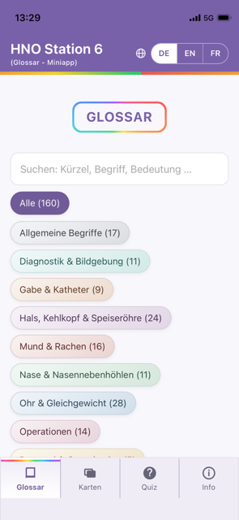
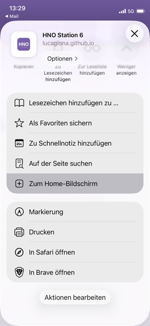
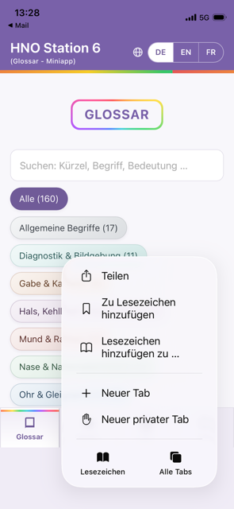
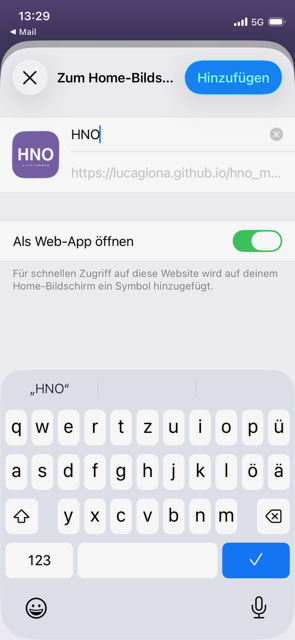
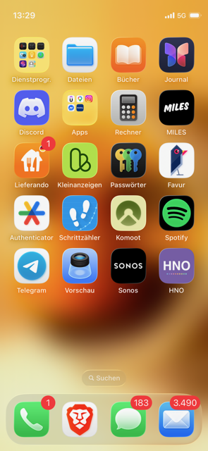

Handout HNO Mini-App
Installation als App auf dem Homescreen · Glossar, Karteikarten & Quiz für die HNO-Station
Die HNO Mini-App ist eine kostenlose Lernhilfe zu Fachbegriffen und Abkürzungen der HNO-Station.
Sie läuft direkt im Browser, lässt sich aber wie eine normale App auf dem Homescreen installieren und
danach auch offline nutzen. Kein App-Store nötig – die Installation dauert weniger als eine Minute.

lucagiona.github.io/hno_miniapp
Mit der Kamera scannen oder im Browser öffnen
IPHONE · SAFARI
1App-Seite öffnen
Scanne den QR-Code oben rechts oder öffne lucagiona.github.io/hno_miniapp in Safari. Die App startet mit dem Glossar.

2Teilen-Symbol antippen
Unten in der Mitte auf das Teilen-Symbol tippen, dann „Zum Home-Bildschirm“ wählen. Nicht das Tab-Symbol unten rechts nehmen.

✓ richtig: Teilen

✗ falsch: Tabs
3Hinzufügen bestätigen
Der Name „HNO“ ist bereits eingetragen. Einfach oben rechts auf „Hinzufügen“ tippen.

4Fertig!
Das Symbol „HNO“ erscheint jetzt auf dem Homescreen – antippen genügt. Die App öffnet sich wie jede andere App, auch ohne Internetverbindung.
